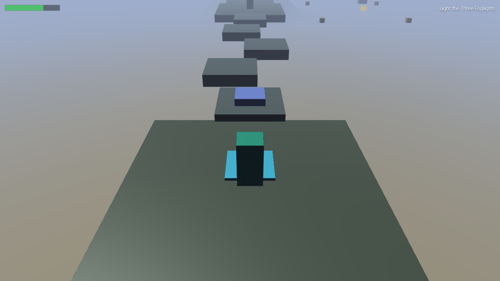
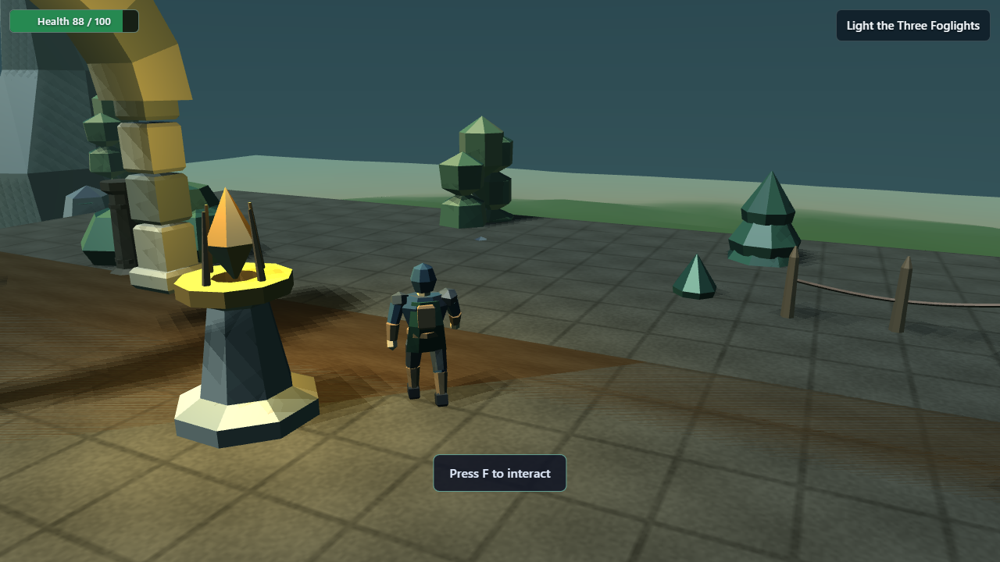
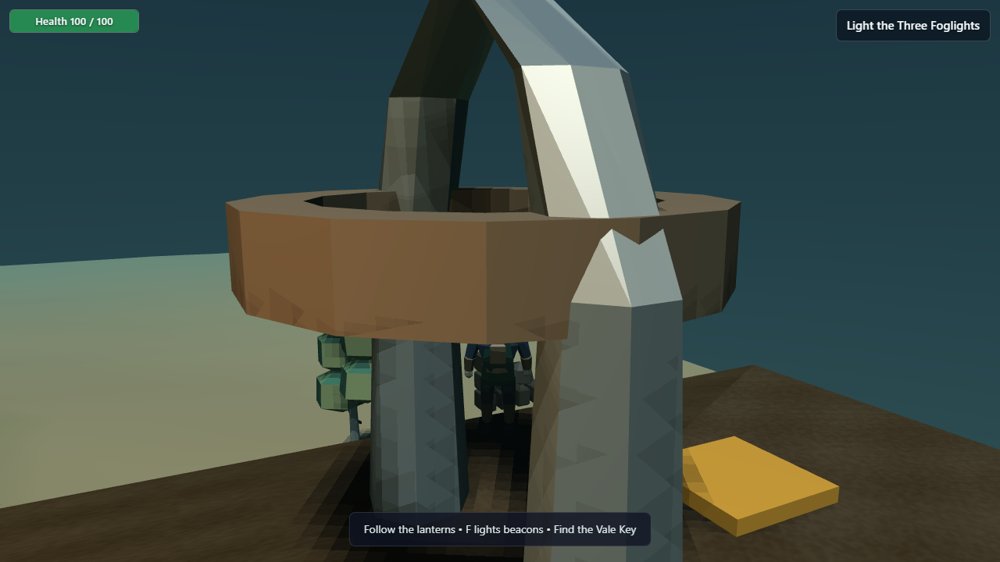

Foglight
Prior 3.83 → final 4.00 · visual 4 · clarity 4 · layout 4 · audio 4 · presentation 4 · uniqueness 4




Redesign: Bent and widened the causeway into three distinct courts, a guardian clearing and sanctuary vista
Camera: Pulled the arch away from spawn and opened the sanctuary sightline
Remaining: Low-poly forest edges remain visible
Play standalone